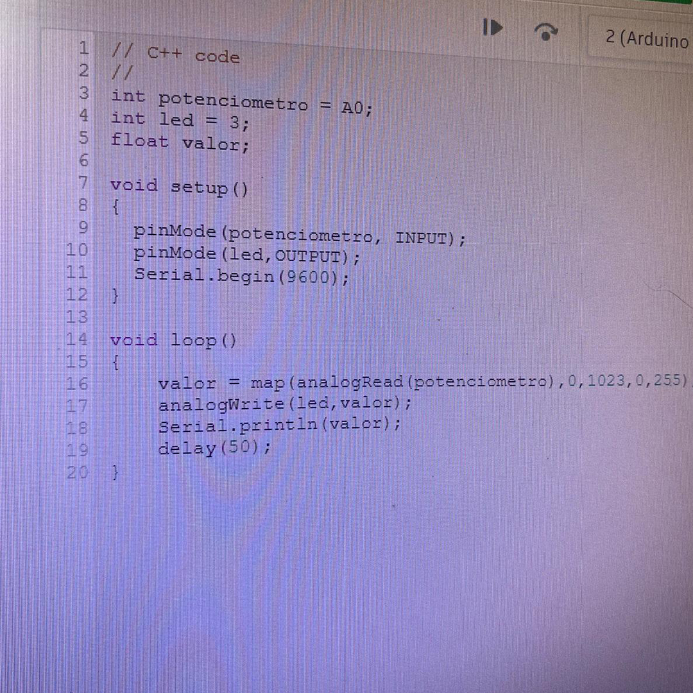

Objetivo
Ascender led e o controlar com o uso de potenciometro.
Materiais Utilizados
Arduino Uno R3 (Placa microcontroladora)
Protoboard (Realizar as conexões sem necessidade de solda)
LED (vermelho)
Resistor (Proteção para evitar que o LED queimasse)
Potenciômetro (Controlar a intensidade do led)
Diagrama do Circuito
O circuito consiste em um LED conectado a uma porta digital do Arduino Uno e um potenciômetro
conectado a uma porta analógica. O potenciômetro é usado para controlar a intensidade do LED.
Código Fonte & Procedimento
Código em C++ utilizando a IDE do Arduino.
O código começa configurando os pinos do Arduino: um para ler o valor do potenciômetro e outro
para controlar o LED. Em seguida, ele lê o valor do potenciômetro, que varia de 0 a 1023. Esse
valor é convertido para um intervalo de 0 a 255, que é usado para ajustar a intensidade do LED.
O código então ajusta a intensidade do LED com base nesse valor convertido. Além disso, ele envia
esses valores para o computador para que você possa monitorá-los em tempo real. O processo se
repete continuamente, ajustando a intensidade do LED conforme o valor do potenciômetro muda.
Resultados & Conclusão
Ao girar o potenciômetro, a intensidade do LED varia de acordo com a posição do potenciômetro.
O experimento demonstrou com sucesso como controlar a intensidade de um LED usando um
potenciômetro e um Arduino Uno.